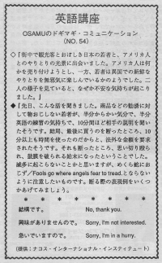

興味がありませんので。
Osamu saw Americans and tourists having a conversation. The Americans wanted to sell something to the tourists. The tourists were just having fun practicing their English in a foreign country. They spent a lot of time talking and finally the Japanese said they don't want it. The Americans got mad and said "You wasted my time! You should pay me money!" One the Americans hit the tourist and damaged his ear drum. Osamu worried about the tourists getting in trouble. Japanese tourists should be careful about not wasting someone's time. If they are not interested in the beginning then they should say, "I'm sorry, I'm not interested." If you keep listening to them talk, they will think you want to buy something from them. Even on the phone, they will interrupt after the first sentence and say "Sorry, I'm not interested."
街中で観光客とおぼしき日本の若者と、アメリカ人とのやりとりの光景に出会いました。アメリカ人は何かを売り付けようとし、一方、若者は異国での新鮮なやりとりを無邪気に楽しんでいるかのようでした。二人の様子を見ていると、なぜか不安な気持ちが起こりました。
先日、こんな話を聞きました。商品などの勧誘に対して物おじしない若者が、半分からかいの気分で、半分、英語の練習の気持ちで、１０分間ほど相手の説明を聞いたそうです。結局、最後に買うのを断わったところ、１０分以上も時間を使ったのだからと、法外な金額を要求されたそうです。それも断わったところ、思い切り殴られ、鼓膜を破られる始末になったということでした。滅多に起こらないことかと思いますが、めくら蛇におじず／Fool go where angels fear to tread. とならないように注意したいものです。断わる際の表現例をいくつかあげてみましょう。
結構です。
No, thank you.
興味がありませんので。
Sorry, I’m not interested.
急いでいますので。
Sorry, I’m in hurry.

| © 1995-2013 NACOS International Institute. All Rights Reserved. |